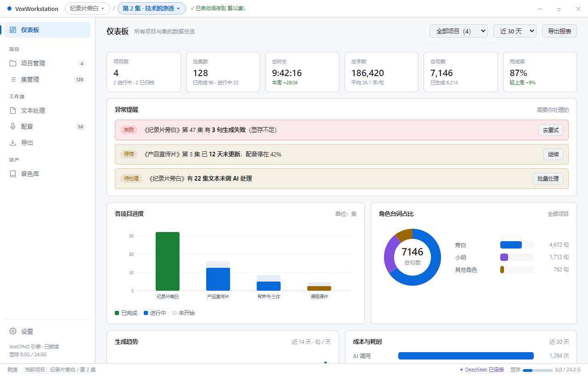
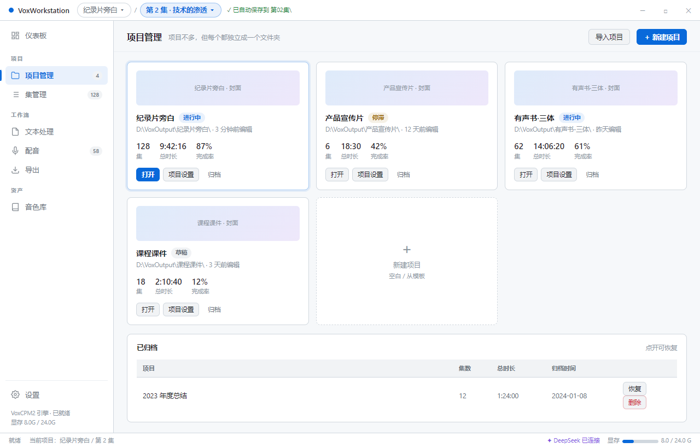
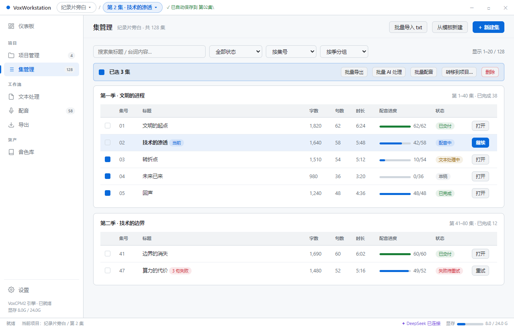
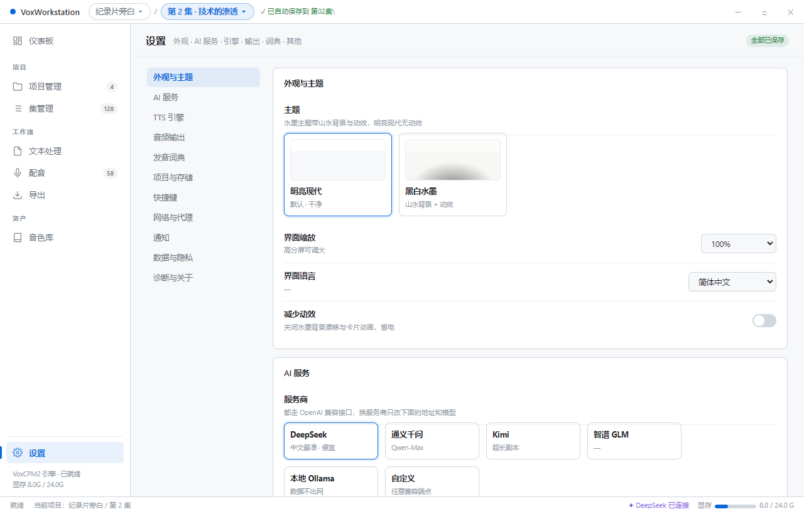

三处改动：
数字角标（4 / 128 / 58）让人一眼知道规模，不用点进去看。




卡片带封面、集数、总时长、完成率、最近编辑时间，一眼认出是哪个片子。 一排就能放下 4–5 个，不用滚动。已有项目直接点开，不需要搜索。
这是真正的难点。128 集平铺会淹死人，所以：
★ = 强烈建议 · ○ = 可选
| 编号 | 功能 | 建议 |
|---|---|---|
| E1 | 按季 / 卷 / 篇章分组，可折叠 | ★ |
| E2 | 搜索标题 + 台词内容 | ★ |
| E3 | 状态筛选 + 多种排序（集号 / 更新时间 / 进度） | ★ |
| E4 | 批量操作：勾选多集 → 批量 AI 处理 / 配音 / 导出 / 转移 / 删除 | ★ |
| E5 | 批量导入：一次拖入多个 txt，按文件名自动建集 | ★ |
| E6 | 集号自动补零 + 手动重排 | ★ |
| E7 | 配音页「上一集 / 下一集」快速切换 | ★ |
| E8 | 跨集队列：一次排队多集，通宵跑完 | ★ |
| E9 | 列表密度切换（紧凑 / 舒适） | ○ |
| 编号 | 功能 | 建议 |
|---|---|---|
| P1 | 项目卡片（封面 / 集数 / 时长 / 完成率 / 最近编辑） | ★ |
| P2 | 项目级默认值：音色分配、参数、词典，新建集直接继承 | ★ |
| P3 | 从模板新建项目 | ★ |
| P4 | 归档 / 恢复 / 删除（删除进回收站而非直接抹掉） | ★ |
| P5 | 项目间转移集 | ○ |
| P6 | 导入项目（.voxproj + 文件夹一并拷入） | ★ |
| 编号 | 功能 | 建议 |
|---|---|---|
| S1 | 全部项目 / 单项目切换 · 时间范围筛选 | ★ |
| S2 | 6 个 KPI：项目数 / 集数 / 总时长 / 总字数 / 总句数 / 完成率 | ★ |
| S3 | 各项目进度 · 角色占比 · 生成趋势 · 成本与耗时 | ★ |
| S4 | 异常提醒：生成失败 / 长期停滞 / 待处理堆积，直接给跳转按钮 | ★ |
| S5 | 导出统计报表 CSV | ○ |
| 编号 | 功能 | 说明 |
|---|---|---|
| H1 | 外观与主题：明亮现代 / 黑白水墨（带预览缩略图） | 你要求 |
| H2 | 界面缩放 / 语言 / 减少动效 | 我补 |
| H3 | AI 服务：6 家服务商 + baseURL + 模型 + 视觉模型(OCR) | 你要求 |
| H4 | API Key（safeStorage 加密）+ 测试连接 | 我补 |
| H5 | 超时 / 重试 / 单次处理上限（超长文本自动分段） | 我补 |
| H6 | TTS 引擎：自动启动、后端路径、默认参数、显存告警阈值 | 我补 |
| H7 | 音频输出：根目录、格式、句间停顿、文件命名规则 | 我补 |
| H8 | 项目与存储：默认位置、自动保存间隔、每日备份、缓存清理 | 我补 |
| H9 | 发音词典 | 已定 |
| H10 | 快捷键自定义 | 我补 |
| H11 | 网络与代理：系统代理 / 自定义代理（访问境外 API 用） | 我补 |
| H12 | 通知：生成完成提醒、失败提醒（系统通知 or 仅应用内） | 我补 |
| H13 | 数据与隐私：AI 请求前脱敏、仅发送当前段落、本地保存 diff 历史 | 我补 |
| H14 | 诊断与关于：日志、诊断包、检查更新 | 我补 |
音频、处理后的文本、分句状态、导出成品，全部按集归档，切到哪集就存哪集：
| 内容 | 路径 |
|---|---|
| 原始文本（永不改动） | 项目\第02集\script.original.txt |
| 处理后的台词 | 项目\第02集\script.txt |
| 分句 + 角色 + 生成状态 | 项目\第02集\lines.json |
| 逐句音频 | 项目\第02集\audio\0001_旁白_温柔女声.wav |
| 导出成品 | 项目\第02集\output\第02集_整轨.wav · .srt · 逐句.zip |
| 导出记录 | 项目\第02集\export-log.json |
| 项目级配置 | 项目\project.voxproj |
| 项目专用音色 / 词典 | 项目\_shared\voices\ · dict.json |
| 问题 | 我的建议 |
|---|---|
| 这 8 项导航（含设置）定了吗？ | 定了就按这个动手 |
| 集按"季"分组，还是按"卷/篇章"？ | 做成可自定义的分组名，默认"第 N 季" |
| 分页每页多少集？ | 20，可切换 50 / 100 |
| 删除项目/集要不要回收站？ | 要。误删一集可能损失几小时 |
| 先做哪几个页面？ | 仪表板 → 集管理 → 设置（框架类），再补文本处理/配音 |
设计稿，renderer/ 里的代码没动。累计 7 份设计稿都在
docs\ui-review\，你确认范围后我按批次改代码。